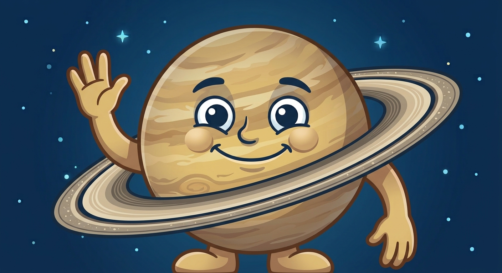

Menjelajah Lapisan Atmosfer Bumi
Selamat datang di Stasiun Pengendali Atmosfer Bumi! Apakah kamu siap menyelamatkan planet kita dari radiasi surya dan hujan meteor?
Profil Penjelajah Muda
Kenalkan dirimu, pilih avatar, lalu siapkan identitas ekspedisi sebelum lepas landas!
Data Siswa
Pilih Avatar untuk Melanjutkan
Pilih karakter yang paling cocok dengan gaya ekspedisi kamu. Jangan salah pilih, nanti avatarnya ikut mengomentari! 😏
Baca Peta Langit, Pahami Bumi
Tujuan Pembelajaran (TP)
- Menganalisis karakteristik, komposisi, serta fungsi 5 lapisan utama atmosfer bumi.
- Mengidentifikasi fenomena cuaca dan iklim serta perannya bagi kehidupan manusia.
- Merumuskan tindakan mitigasi bencana atmosferik (pemanasan global & cuaca ekstrem).
Komposisi Udara Bersih
Troposfer (0 - 12 km)
Tempat terjadinya fenomena cuaca (hujan, angin, awan, petir). Lapisan paling padat dan menopang kehidupan makhluk hidup.
Stratosfer (12 - 50 km)
Rumah bagi Lapisan Ozon (O₃) yang menyerap sinar UV berbahaya. Bebas cuaca, cocok untuk jalur pesawat jet.
Mesosfer (50 - 85 km)
Pelindung bumi dari hantaman meteorit. Suhu sangat dingin hingga -100°C (lapisan terdingin!).
Termosfer & Eksosfer
Tempat terjadinya Aurora dan gelombang radio (Ionosfer). Eksosfer merupakan batas luar angkasa tempat satelit mengorbit.
Eksosfer (> 800 km)
Batas luar yang sangat renggang; satelit mengorbit dengan hambatan udara rendah.
Kontrol Keseimbangan Atmosfer Bumi
Pulihkan perisai atmosfer sebelum radiasi surya dan meteor menembus sistem.
HARD MODE • PRESISI PENUHBantuan Bertingkat
Pilih lapisan. Buka petunjuk berikutnya hanya jika masih diperlukan.
Pilih Tier 1 untuk membuka petunjuk konsep
Arsip Database Atmosfer
Micro-learning animasi 90 detik dan tiga panel penguatan konsep.
Animasi siap. Tekan Putar untuk memulai narasi visual 90 detik.
Simulator Ketinggian Atmosfer Interactive Vehicle Ascent
Klik lapisan yang ingin kamu jelajahi, lalu buktikan bahwa kamu siap menembus atmosfer!
Pertanyaan tantangan lapisan...
Status Jawaban
Game Simulator Edukasi Multi-Level Mode
Naikkan levelmu dan buktikan seberapa tajam radar geografimu!
Soal 1 dari 3
Kelompokkan Fenomena & Karakteristik Lapisan
Jadilah Pengambil Keputusan untuk Bumi
Studi Kasus Bencana Atmosferik:
"Sebuah wilayah pesisir di Indonesia kerap mengalami gelombang panas ekstrim, peningkatan siklon tropis, dan perubahan pola hujan drastis akibat peningkatan gas rumah kaca dan penipisan lapisan ozon."Hasil Penilaian Kritis:
SERTIFIKAT PENJELAJAH ATMOSFER
Peta capaian ekspedisi geografi dan penguasaan lapisan atmosfer Bumi.
Ekspedisi Geografi • Fase E

NAMA SISWA
Avatar belum dipilih
Kelas 10 Fase E • Geografi • SMAN 1 Indonesia
Pesan Ekspedisi:
"Perjuanganmu tidak mudah, hanya saja kamu berjuang di tempat yang salah..." 😂
Pusat Rangkuman & Glosarium Interaktif
Buka kembali peta konsep dan istilah penting. Klik baris lapisan untuk membuka catatan rahasia Atmosia.
Matriks Karakteristik Lapisan Atmosfer
| Lapisan | Ketinggian | Ciri Utama & Fenomena |
|---|---|---|
| Troposfer | 0 - 12 km | Cuaca, awan, hujan, petir, suhu turun seiring ketinggian. |
| Stratosfer | 12 - 50 km | Lapisan ozon (penyerap UV), lokasi penerbangan pesawat jet. |
| Mesosfer | 50 - 85 km | Membakar meteorit, suhu terdingin mencapai -100°C. |
| Termosfer | 85 - 800 km | Ionosfer (pantulan gelombang radio), tempat fenomena Aurora. |
| Eksosfer | > 800 km | Batas angkasa luar, tempat orbit satelit buatan manusia. |
Glosarium Istilah Penting
Fenomena pemerangkapan panas matahari oleh gas CO₂, CH₄ di troposfer untuk menjaga hangatnya bumi.
Kumpulan gas ozon di stratosfer yang menyerap radiasi ultraviolet B berbahaya bagi manusia.
Kondisi di mana suhu udara justru meningkat seiring bertambahnya ketinggian (terjadi di stratosfer).
Upaya mengurangi risiko akibat bencana cuaca ekstrem seperti angin puting beliung, kekeringan, dan banjir.
Tim di Balik Ekspedisi Atmosfer
Pilih personel untuk membuka sinyal profilnya.